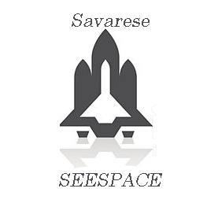

|
|
Uma estrela é uma grande e luminosa esfera de plasma, mantida íntegra pela gravidade e pela pressão de radiação. Ao fim de sua vida, uma estrela pode conter também uma proporção de matéria degenerada. Observações sugerem que a formação de estrelas começou em torno de 180 milhões a 250 milhões de anos após o Big Bang.
|
Como as estrelas nascem?
|
Nebulosa

|
As nebulosas (nuvens formadas de poeira e gás) se contraem e formam uma esfera. Ao se contrair, o gás se concentra lentamente e aquece milhões de graus, num processo violento que pode levar milhões de anos.
Assim, é formada uma protoestrela e, somente após atingir uma temperatura altíssima, têm início as reações nucleares das quais resultam as estrelas.
|
Qual o tamanho das estrelas?
|
|
Para se ter noção da dimensão das estrelas, saiba que o Sol é uma estrela pequena. No entanto, ele tem um diâmetro de 1 milhão e meio de quilômetros (o que equivale a cerca de 1 milhão de planetas Terra).
Estrelas Maiores do que o Sol: A estrela Eta Carinae é 5 milhões de vezes maior do que o Sol. Enquanto isso, a estrela Betelgeuse, por sua vez, é 300 vezes maior que a Eta Carinae. A estrela VYCanisMajoris, finalmente, é 1 bilhão de vezes maior do que o Sol, sendo assim a maior delas.
|
Quais são as cores das estrelas?
Existem estrelas vermelhas, amarelas, brancas e azuis. As estrelas emitem luzes de cores diferentes em decorrência da sua temperatura.
As vermelhas, com cerca de 3000º C, são as que têm a temperatura mais baixa; enquanto com cerca de 40000º C as azuis são as que têm a temperatura mais alta.
O Sol, a nossa estrela
|
|
O Sol gasta 600 toneladas de hidrogênio a cada segundo. De acordo com os astrônomos, isso indica que o período de vida do Sol terminará em cerca de 5 bilhões de anos.
No seu caso, depois de atingir uma dimensão gigantesca, ele se transformará em uma nebulosa planetária. O que dele sobrar será uma anã branca.
O que são Estrelas Anãs Brancas?
São estrelas que tem calor residual porque já queimaram o seu gás hélio. À medida que esfriam, elas vão se tornando mais difíceis de se enxergar a olho nu. Antes desse estágio, porém, elas já passaram pela fase de estrela gigante vermelha.
|
As estrelas Morrem?
As estrelas morrem após gastar o seu combustível - quanto maior a sua dimensão mais combustível elas consomem.
Primeiro, as estrelas gastam o hidrogênio e quando isso acontece as estrelas envelhecem. A seguir, começam a gastar o hélio e isso faz com que elas cresçam muito, de modo que sua temperatura diminui, tornando-a vermelha.
Assim, nesse estágio as estrelas são classificadas como gigantes vermelhas.
Estrela cadente
Estrela cadente é o nome popular como é conhecido o meteoro. A estrela cadente resulta do lançamento de uma partícula sólida que se evapora. O resultado é um efeito luminoso.
Quando visualizamos um rastro luminoso no céu durante a noite, podemos estar diante do fenômeno da estrela cadente.
As estrelas cadentes são formadas por fragmentos advindos do espaço interplanetário que se aquecem no momento em que atingem a atmosfera.
Constelações
As constelações são um conjunto de estrelas que embora pareçam próximas a olho nu, estão extremamente distantes no espaço celeste.
Dentre as principais constelações do universo vistas da Terra, as mais populares são: Cruzeiro do Sul, que é vista do hemisfério sul. Ursa Maior e Ursa Menor, que são vistas do hemisfério norte.
Comparação das estrela com os planetas
|

|


|
Autor: Luan Francisco Savarese
Astronomia é cultura
|